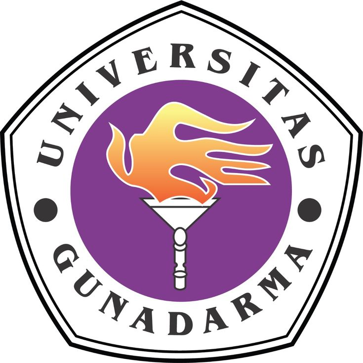
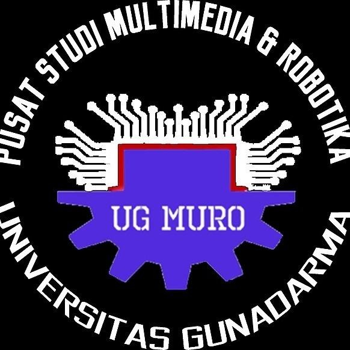
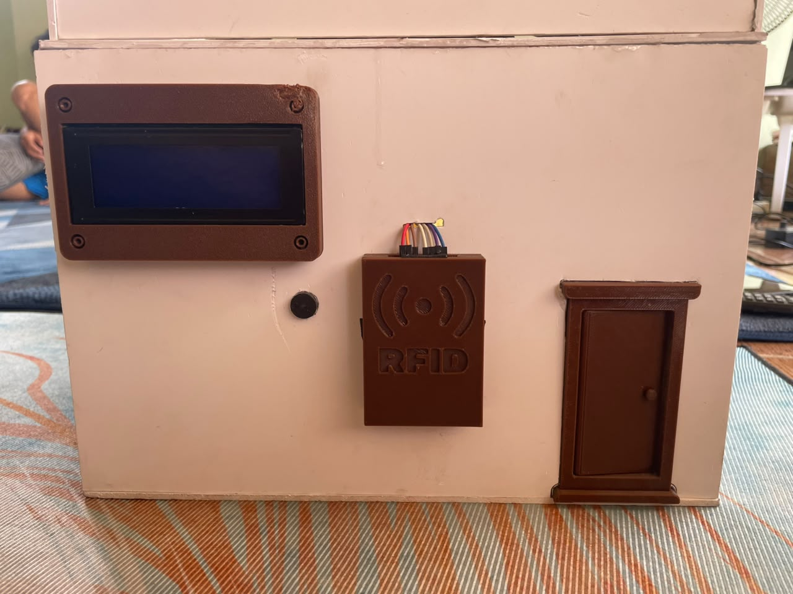
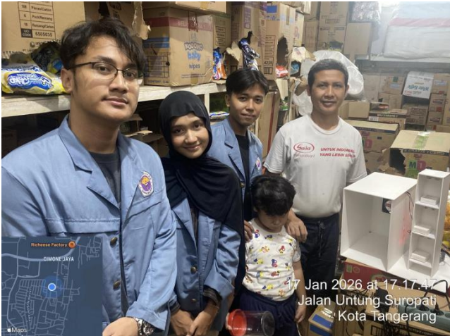
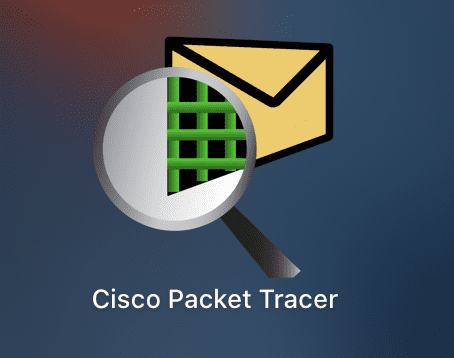

Halo, Saya
Muhammad Luqman Hakim
Lulusan Sistem Komputer dari Universitas Gunadarma yang berdedikasi tinggi di bidang Internet of Things (IoT), Embedded Systems, dan Infrastruktur Jaringan. Berpengalaman merancang sistem cerdas secara end-to-end, mulai dari desain PCB, pemrograman mikrokontroler (ESP32/Arduino), hingga integrasi cloud (Firebase) dan dashboard web. Saat ini sedang mempersiapkan sertifikasi CCNA guna mengimplementasikan infrastruktur IT yang aman, andal, dan terukur.
Pendidikan

Universitas Gunadarma
S1 Sistem Komputer | Graduated 2026
Fakultas Ilmu Komputer dan Teknologi Informasi. Berfokus pada arsitektur sistem komputer, embedded system, Internet of Things, dan Infrastruktur jaringan.
- LSP Universitas Gunadarma: Kualifikasi 6 Bidang Elekronika Prototipe Dan Pemrograman
- Penulisan Ilmiah: Prototipe Smart Office Berbasis ESP32 Untuk Otomasi Akses Pintu, Pencahayaan, dan Pemantauan Suhu Terintegrasi Google Spreadsheet
- Skripsi: Rancang Bangun Accesss Control dan Kendali Lampu Otomatis Pada Ruang Kantor Berbasis Internet Of Things
Pengalaman Organisasi

Pusat Studi Multimedia & Robotika (PSMURO)
Asisten Lab | Universitas Gunadarma
Pusat Studi Multimedia dan Robotika (PSMURO) Universitas Gunadarma merupakan laboratorium riset dan pengembangan yang berfokus pada integrasi teknologi multimedia, sistem cerdas, serta robotika untuk mendukung kemajuan pendidikan, penelitian, dan inovasi di Indonesia. Sebagai bagian dari ekosistem akademik Universitas Gunadarma, laboratorium ini berperan sebagai wadah penelitian interdisipliner, pelatihan, serta pengembangan teknologi terapan yang dapat diaplikasikan pada berbagai bidang, mulai dari industri, pendidikan, hingga layanan masyarakat.
- Mengembangkan dan memelihara modul praktikum serta perangkat keras berbasis mikrokontroler.
- Membimbing mahasiswa dalam kegiatan praktikum dan pelatihan teknis di bidang embedded system.
- Berkolaborasi dalam riset dan pengembangan proyek otomatisasi serta robotika di lingkungan pusat studi.
Lisensi & Sertifikasi
Sertifikasi kompetensi dan pelatihan profesional yang telah diselesaikan.
Projects

Rancang Bangun Accesss Control dan Kendali Lampu Otomatis Pada Ruang Kantor Berbasis Internet Of Things
Merancang access control dan kendali lampu otomatis pada ruang kantor agar kondisi pada ruangan dapat dipantau secara otomatis dan real-time, tanpa perlu pemantauan langsung di lokasi.
Lihat Detail
Sistem Monitoring Ketersediaan Barang dan Otomatisasi Lampu serta Kipas pada Gudang Sembako Berbasis Internet of Things dan Firebase
Merancang sistem monitoring ketersediaan barang pada Gudang dan otomatisasi lampu berbasis Internet of Things agar ketersediaan barang dan kondisi gudang dapat dipantau secara otomatis dan real-time, serta lampu dan kipas dapat bekerja secara efisien tanpa perlu pemantauan langsung di lokasi.
Lihat Detail
Enterprise Branch Network Design: Secure Router-on-a-Stick Architecture
Proyek ini adalah implementasi komprehensif dari kurikulum Cisco CCNA 200-301. Proyek ini mendemonstrasikan perancangan arsitektur jaringan enterprise branch (cabang perusahaan) tradisional menggunakan pendekatan Router-on-a-Stick (RoaS) yang dikombinasikan dengan protokol High Availability dan skema pengamanan bertingkat.
Lihat Detail